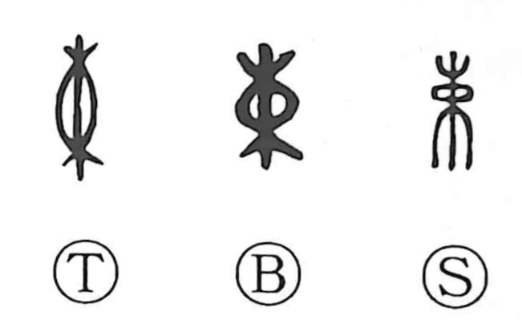

束

Kun: taba, tabaneru, tsuka | On: soku
bundle ・ tie up ・ bind
Explanation
束 pictures pieces of wood gathered and tied around the middle. The binding draws the separate branches into one bundle. The character names both the act of bundling and the bundle itself.
The same arrangement was used for other materials. Early inscriptions count bundles of silk, thread, and arrows, each bundle making a definite unit. Binding can also put something in order, as when hair is tied up or clothing fastened properly. Applied to conduct, the fastening becomes restraint: keeping one’s actions within bounds. In 結束, the separate members are brought together into a single, united whole.